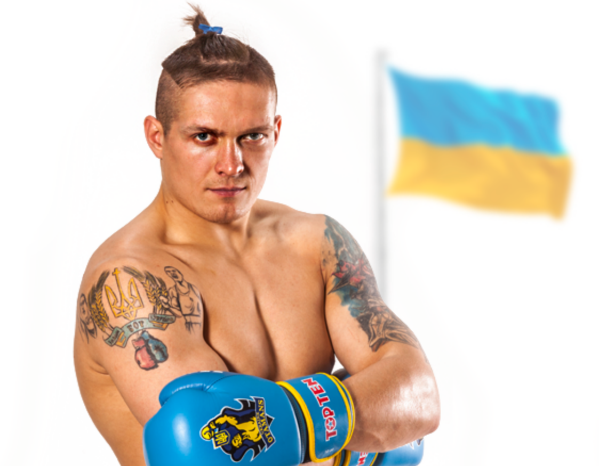

Александр Александрович Усик – известный украинский боксер, выступает на профессиональной арене, имеет чемпионский титул мира. За свои взгляды получил прозвище «Патриот до кончика волос».
За последние годы можно сказать о многих победах Александра, и как они повлияли и на него, и на его карьеру. Но среди всех поединков, можно выделить 5 самых ярких и красочных боев, которые шокировали весь мир, и заставили относиться к украинскому боксеру с уважением.